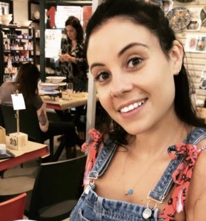

Team members
Adem Doger
My name is Adem Doger, I’m 18 years old and was born in Australia with a Turkish background. I’m currently enrolled
in my first year of a Bachelor of Information Technology at RMIT. Some of my hobbies include playing games,
listening to music, binging shows and watching boxing. My interests in IT stem from the genuine enjoyment and
satisfaction I get from using computers and other pieces of technology. I have always been fascinated since I
was a child, but that interest coupled with my relative skill in the department led me to pursue it further. My
IT experience so far comprises of my high school subject which I completed, and any of my personal experience in
day to day use.
Adem Coskun
My name is Adem Coskun, I’m 18 years old with a Turkish background and have started my first year for Bachelor of Information Technology at RMIT.
I have had an interest in computers ever since I was a child therefore it resulted in me taking up this
course to complete, many of my interests for IT also come from my hobbies at home which includes figuring out
how to build systems at home and also looking at the differences in hardware in computer systems. My hobbies
include playing games, listening to music and looking after my pets at home. Aside from my interest in IT at
home, I have done IT in High School for 2 years and that’s where I have my current experience from and just
general knowledge from at home. Test Results: Myers Briggs Test: INFJ-T / Advocate Learning Style Test: Visual
Psychometric Test: Confidence 6/10, Achievement Driven 7/10. Overall, these tests show that I am more of a
visual learner and work best with examples shown to me visually. I will attempt to complete the work given to
me but may have troubles understanding my work if not explained visually, due to this burden, I will attempt to
make it as clear as I can when I do not understand something and hopefully these test results show my team members what kind of learning style I have. Ideal Job: Network and/or Systems Engineer
Darren Geary
I am a tactile learner; I learn by touching and doing. I best understand and remember things through physically
moving; I best learn "hands-on" and I've always preferred to touch, move, build, or draw what I learn, and I
tend to learn better when some type of physical activity is involved. I like to take things apart and put
things together and I tend to find reasons to tinker or move around when I become bored. As a tactile learner,
I am more of a practical worker, but also tend to do things in bursts and haphazardly - get a lot of work
done at once, then take a break for a while.
Generally I prefer to let someone else take charge - I like to be responsible for only one particular part
of a project. That way, I know that the work I have done is quality or not and who else has done what. This
also carries across when I do group work.
Loretta Corby
Hi! I’m Loretta Corby, I’m from Melbourne and have lived just north of the city my whole life.
I love going to see live music and hanging out with friends and family.
My interest in IT started through my love for technology, and how I was able to understand new tech easily.
I unfortunately don’t have any experience in IT, but I hope to gain that knowledge and skills through
completing the Bachelor of Information Technology. My MBTI test results were ISTP-T meaning I focus on facts
and details; I am a logical thinker and decision maker and I can be spontaneous and flexible rather than planned
and organized. My learning style is auditory meaning I prefer to learn through having a concept explained to me,
rather than having to read the concept by myself. My Psycho-Metric test results show that I possess assertiveness,
cooperation, openness and patience skills. These results show me that I can adapt to any position in a team, and
I am able to be open and patient with members in the team. I can consider the details of the project and can be
flexible with ideas. I think this can be useful as it will help my team connect our ideas and creativity to the
criteria of the project. My ideal Job is to be a Senior Web Designer.
Katelyn Knight
My name is Katelyn Knight, I'm eighteen years old, I was born and raised in Australia and I am currently studying
my Bachelor of Information Technology at RMIT. My Hobbies include but are not limited to, playing games, art and
socialising with friends. My personal interest in IT include things such as programming and as of recently, web
programming. My experience in IT is rather new as I have only just started my IT course, but I have in the past
built my personal computer and learnt the basics of C#. In the Myer-Briggs personality type test I got ESFP-T,
the entertainer , being more extroverted in nature will benefit the group greatly as I have the ability to relate
to others and think on my feet, resulting in being a resourceful and inspiring group member. From the “Big 5
Personality test” I scored a 78% in extraversion which further reinforces the results from the Myer-Briggs
personality type test. Finally, I am an auditory learner which means I can benefit the team as I am able to pick
up more auditory information and understand what needs to be done.
My ideal job is an application Programmer
Chinae Humphries
My name is Chinae Roxanne Humphries, I am 28 years old,
born and raised in South Africa. Currently doing my Bachelor of Information Technology at RMIT. My hobbies include exercising.
I make it part of my daily routine. I also enjoy baking and DIY projects. As a young entrepreneur and business owner my interest and passion for IT stemmed
from doing my own online marketing and assisted web designs for my own businesses. I have no official IT
experience to date. I plan to obtain experience whilst completing my Bachelor of Information Technology degree.
I am known to be a perfectionist, but I feel it is a good reflection of my attention to detail. In the Myer-Briggs
personality type test I got INTJ. The results of the three tests reassure me that I am a well-organized and detailed
individual. My learning style is visual. I respond better to information presented in a visual format. Creativity is
my release and I would like to explore this more through my career path. I take my career very seriously and will
do my best to complete any task given to me. The results will be helpful to my group as they will be more aware of
where my strengths and weaknesses are and can therefore balance them out with the other team members' results. My ideal
Job would be a Product Manager.
IT Work - Interviews with Industry professionals
Donovan Humphries: CTO at DomaCom
1. What kind of work is done by the IT professional?
I do three main things which include software development (coding), IT infrastructure management and support so if DomaCom has any IT related issues I solve them from small things like fixing a mouse to implementing a CMS (content management system).
2. How big is your team?
My team consists of 6 people.
3. How long have you been in the industry? 15 years full time
I have been in the industry for 15 years full time and 5 years part time gaining my experience when I started.
4. What qualifications do you have?
Bachelor of Computer Science,
Master of Business Administration (MBA)
5. What was your first job in the industry?
I started out in the industry as a Web developer.
6. What kinds of people do you interact with? other IT professionals? clients? investors? the general public?
I interact with the other IT people within my team. Business individuals who are in sales, marketing and client services team. I will only interact with a client where there are partnerships involved. I deal with the B2B (business to business) rather than to individual customers.
7. What do you find you spend most of your time on?
I spend most of my time doing product management and development.
8. What aspect of their position is most challenging?
Dealing with people who have low IT literacy. This restricts me as I need to keep things simple to avoid confusion. When you are dealing with someone who has low IT literacy it is hard to be on the same page at limits how technical I can be.
9. What do you like most about your work?
Ability to be creative and solve problems.
10. What is the best career decision you have ever made?
The current position I am was the best career decision I have made. I had to take a step down in terms of my position, but it was an interesting organisation and I saw potential and growth possibilities within DomaCom.
11. How would you describe the IT industry culture?
The IT industry is still very male dominated. The industry is introspective, fun, exciting, current and ever changing. It is where all the cool stuff is happening.
12. Do you think there are opportunities for self-employment within the IT industry?
Absolutely yes through contract work. The industry is built on start-ups. The start up costs are low in comparison to other industries. Your knowledge is your main component.
13. Is the field growing fast enough so that there is room for graduates like ourselves in industry?
No, I don’t think it is growing fast enough. It is hard to get a job in Australia in comparison to the UK where I worked previously. Employees are looking for skills and graduates tend to not have them due to lack of experience and therefore struggle to find jobs.
14. Any advice on how to write a resume that will appeal to employers in the IT industry?
Focus on your practical experience instead of buzz words. The facts count not how you word it.
15. How can we as students assess whether we have the skills needed for a position such as yours?
Technical as well as people skills are important. I suggest doing an internship as it will give you a good idea on what to expect in the industry and if you are able to complete what is expected of you. If you are running a team and have lack of skills or knowledge, they won’t take you seriously.
16. Have you done the Meyers-Briggs assessment? If yes what were your results and is it a good reflection of the type of person you are?
Yes, INTJ. I believe that this test does not represent who you will be under pressure. I can however identify with a few of the points. I also learnt a few things about myself that I was not aware of before such as being an introvert.
17. What hours do you work? Is there flexibility in your hours?
I work 8-5 Monday to Friday, and I have flexibility in my hours due to my position.
If extra hours need to be worked in order to deliver what was promised, then I will work extra hours. I do my best to manage my team effectively so that we do not need to work in the extra hours. Time management is important here.
18. What do you do if you are unable to solve a problem on your own?
I consult my team and we brainstorm ideas on how to solve the problem.
19. What industry related software do you use?
Visual Studio, Visual Studio Code, Azure (hosting) Microsoft.
20. Do you have any advice for us entering the industry?
Build stuff it’s the best thing to show when looking for a job and building up your resume.
Kevin Geary - SAP Project Manager
1. What is your occupation?
SAP Project Manager - manages projects that implement the SAP Enterprise Relationship Planning (ERP) solution for the retail industry
2. How big is your team?
7 people
3. What’s your business name?
RSAP
4. How long have you been in the industry?
24 years
5. What qualifications do you have?
Bachelor of Business - Banking & Finance Major
6. What was your first job in the industry?
Consulting in Andersen Consulting (now accenture)
7. What kinds of people do you interact with? other IT professionals? clients? investors? the general public?
Project teams
Clients (mid-senior level management)
Fellow business directors
8. What do you find you spend most of your time on?
Managing staff/ project schedules
9. What aspect of their position is most challenging?
Dealing with over-budget / overtime projects and difficult team members
10. What do you like most about your work?
Variety - projects are always different and implementing the ERP is always different
11. How would you describe the IT industry culture?
Everchanging - having to constantly learn new skills. People often work long hours and overtime to complete tasks, as opposed to 9-5
12. Do you think there are opportunities for self-employment within the IT industry?
Yes - many people are contractors who offer services to IT companies, including on SAP project teams
13. Is the field growing fast enough so that there is room for graduates like ourselves in industry?
Yes - the industry is always growing and changing - one of the fastest growing fields of work
14. Any advice on how to write a resume that will appeal to employers in the IT industry?
Emphasise technical skill/ knowledge, teamwork experience and exposure to technology
15. How can we as students assess whether we have the skills needed for a position such as yours?
A Project manager must be very organised, good at managing OTHER people’s schedules, interpersonal skills and an ability to see the big picture
16. Have you done the Meyers-Briggs assessment? If yes what were your results and is it a good reflection of the type of person you are?
No
17. What hours do you work? Is there flexibility in your hours?
Maybe 8-10 hours work, but this can increase to 12-13 during highly important periods
18. Where?
At the client’s site - the project office
19. What industry related software do you use?
SAP ERP, MS Office, MS Project, DBMSs
20. What is the best career decision you have ever made?
Not pursuing a career in banking/ finance
21. Do you have any advice for us entering the industry?
Build technical and people skills before leaving uni
Industry Data
Darren Geary
Ideal Job - Web Programmer/ Software Developer
Java and JavaScript are 2nd and 3rd. Python, C#, Software engineering are in the top 20 skills.
Non It skills include team working skills, communication and problem solving, all in the top 10.
SDLC, SQL and Linux are the 3 highest ranked skills not needed.
Planning, writing and researching are the top 3 general skills not needed
After the March 2018 Burning Glass data and the current data, I still think my job will be useful and in demand.
Loretta Corby - Senior Web Developer
1.Currently a front end developer is 6/10 on the jobs in demand list.
2. The key skills needed as a senior web developer are HTML, CSS,Java, JavaScript, high team working skills, communication and problem solving.
2.1.Java and JavaScript are second and third in the software and programming skills required.
2.2. Communication skills is listed as the top skill in demand, followed by problem solving. Team working skill is currently not on the list.
2.3. SQL, Python and Linux
2.4. Planning, writing and research.
3.After the March 2018 Burning Glass data and the current data, my opinion on my ideal job has not changed as it is still an in demand job, and will need to be filled regardless of demand.
Katelyn - Java Developer
A Java developer is currently ranked 8 out of the top 10 demanded technology jobs in Australia.
Required Skills as of 2018.
The required IT-skills that I need are the latest knowledge of Java 8, SQL, and JavaScript which are the top IT-skills demanded by employers.
Communication and problem solving skills are rated top two however working as a team is not a required skill in the top 10 required skills in the burning glass data.
Python, LINUX and SDLC are the top three highest ranking IT-skills in the industry that I do not need for my required skills
Problem-solving, writing and planning are the top skills in the IT industry that are not in my required skill set.
After looking at the latest burning glass data where the ranking of Java Developer now being number 2 of the top 10 jobs, my ideal job has not changed as it is in a higher demand than ever before.
Chinae Industry Data - Product Manager
Industry Data
1. Product Manager (Systems Analyst) – Ranked #3
2. General Skills
Communication Skills, Project Management, Team Management, Strong Leadership Skills, Business Analyst, Creative Problem Solving,
IT Specific Skills
Website Production, Organizational Skills, HTML/CSS, Writing Skills, Java Script, Research, Microsoft Office,
2.1 IT Specific Skills – The majority of the IT required skills were in demand by employers with JavaScript being the most popular one and Microsoft Office being the lowest.
Project Management – ranked 5th
UX – ranked
Business Analysis – ranked 9th
Website Production ranked 17th
HTML/CSS
JavaScript – ranked 2nd
Microsoft Office – ranked 18th
2.2 General Skills – All the general skills for a product manager were on the list for skills greatest in demand
Communication Skills – ranked 1st
Team Management & Team work/Collaboration – ranked 5th & 19th
Strong Leadership Skills – ranked 11th
Creative Problem Solving – ranked 2nd & 9th
Organizational Skills – ranked 3rd
Writing Skills – ranked 4th
Research – ranked 10th
2.3 SQL, JAVA, SAP
2.4 Troubleshooting, Mentoring, Quality Assurance & Control
3. No, my opinion on my ideal job has not changed. Although you need to have a long list of both general and IT skills, I still feel it is achievable and a role I will be well suited with.
Adem Coskun - Software Engineer
1) Group Ideal Jobs
-Software Engineer
-Senior Web Designer
-Application Programmer
-Project Manager
-Network/Systems Engineer
2) Skills Required
-Strong Communication
-A degree in Computer Science or related field or industry with training and substantial experience
-Ability to use programs and coding languages such as AWS, MongoDB, SQL, Python, Java and Ruby (More applies but these are the base ones and broad examples required)
-Source Coding
2.1)
The ability to use Bitbucket Source Code Control and desirable IT skills such as AWS, MongoDB, Python and security software such as Imperva WAF and general exposure to applications such as Monit or CloudWatch, these are high demand IT skills required for Network/Systems Engineering.
2.2)
The ability to have strong communication skills and to have the ability to work cross-functionally. Also having EU language skills is a desirable demand when applying. Exposure to payments, banking or secure communications is also a plus.
2.3)
Recommended but not mentioned in required is use of IT skills such as AI Learning, Virtualization and Tech Support. Even though these can be useful in sectors of IT and the experience it provides, it isn’t necessarily required for you to have skills in these skills to apply for System/Network Engineering.
2.4)
Teamwork, Self-Management and Planning are important general skills to have but are not required to employ for a job at System/Network Engineering.
3.)
No my Ideal job has not changed from Systems/Network Engineering as it is still high in demand for employers and also it has always been my dream job therefore it has not affected my opinion regarding the Burning Glass Data.
Adem Doger - Software Engineer
1
Software engineer/developer – 337 - 18
2.1
JavaScript – 2946 - 2
Java – 2860 - 3
C# - 1643 – 12
Software engineering – 1372 – 15
Python – 1150 - 22
2.2
Problem Solving – 16445 – 2
Writing – 15590 – 4
Team work – 14364 – 5
Time management – 5059 – 12
Meeting deadlines – 3346 – 16
2.3
SQl – 3570 – 1
Microsoft Windows – 2699 – 4
Project management – 2252 – 5
2.4
Communication skills – 44367 – 1
Organisational skills – 15844 – 3
Troubleshooting – 11471 – 6
3
No it hasn’t changed, despite the fact that it is not the most in demand position it is still a role that needs to be filled regardless. The software developer is an essential part in any IT team, so I still feel comfortable with the jobs security in the future.
IT Technologies
Microcomputers - Katelyn Knight
Small computing devices such as Raspberry PI, Arduino and Makey Makey’s and more are made for the purpose for education, passion projects and for businesses, the existence of these products have lead to the creation of many exciting things such as security devices, clocks, robots and computer control panels but their existence themselves is a step into the ever expanding and exciting world of technology for those with passion, for the purpose of this assessment I will only be focusing on Raspberry Pi’s, Arduino and Makey Makey’s.
The Raspberry Pi is a low-cost high functioning minicomputer for the purpose of acting similar to how an actual computer would behave from playing games, browsing the internet or word processing. The Raspberry The state of the art for this new technology is the Raspberry Pi 4, the latest of the Raspberry Pi series of computers, it has many incredible features such as 4K video viewing, up to 4gbs of RAM, gigabit ethernet and much, much more. The Raspberry Pi can be the brain of robots, the ability to be turned into a clock, a Bluetooth speaker or even a weather station, when incorporating different technologies in unison with the Raspberry Pi there is not telling what someone can do with it, for example, with the right technology you can create an arcade machine or a gaming console, or even a budget desktop computer with a raspberry Pi.
The Arduino is an open source business where anyone can make a board, therefore there is no state-of-the-art machinery as there a few top contenders such as Arduino Nano, Uno or Duo. You can make many things with an Arduino chip such as a 3d printer, a robot and many, many more things. Things that are likely to be done in the future expands to the imaginative minds of the people who use it. With every year passing there can be more and more powerful chips and boards released so then we can have the opportunity for many amazing things even integrating the technology into our everyday lives.
Makey-Makey’s are a beginner friendly version of the previously mentioned Raspberry Pi’s and Arduino’s where children and school can make use of the technology to teach the different things you can do. Exposing children and school to creating things with technology can introduce the future generations into technology to bring in new insights and innovation into our world. There is no news on the future developments of Makey Makey’s however there is no telling what people could do with the technology to develop the Makey Makey to create more advanced things for a more intermediate level of people leading to more and more people being educated in the ever expanding world of technology.
Because the technology of Raspberry Pi’s A, Arduino and Makey Makey’s there is an endless possibility of brilliant minds working from home or a business who can use their creativity to make incredible things that can push the technological world further with different inventions from the Raspberry PI and others to progress our way of living. The technologies mentioned before have allows for everyday people to do amazing things which I am more interested in the robotic side of independent building, everyday people are able to build their own robots for the fun of it, people can make privacy scanners for their homes or even a baby monitor.
The technological developments that make these inventions possible are things such as the invention of internet, the usage of Python, Java or other programming languages, the use of ethernet, the invention of RAM and similar technologies as well as the thousands of hours of dedicated research that goes into making such technologies to be used by everyday people in their homes and in businesses all around the globe. The addition of these products expanding and getting more advanced will lead to the future of home inventions or business technology enhancements through these products will surely lead to a future of everyday convenience and fun.
The potential impact of this technological development can be exponential, the creation of these devices like Raspberry Pi, have enabled tech enthusiasts from all around the world from different demographics to build things in their free time to create brilliant inventions, many of which can be a smash hit in the IT world creating new inventions. These technologies have not been around for a long time, for example the first Raspberry Pi came out in 2012, so there is still a long time for there to be new and exciting things to develop which will affect the hobbyists and technology enthusiasts to build more things because they have affordable technology to have in their home, where before there was none so creative minds would have to create even the board or chip itself. The creation of this technology can only stand to grow jobs, take for example, Arduino, Arduino is an open source company where many other businesses can create their own Arduinos and sell them on the site which created jobs for many people. In the example that someone someday creates a thing using the Arduino or Raspberry Pi which becomes a hit, a new business will be made with factories creating this product where workers will build the product, will give many more people jobs. The inventions from these technologies are also unlikely to make any technologies that aren’t already, redundant, perhaps when the next new version of Raspberry Pi or Arduino comes out they will not be using certain technologies that have been made redundant by other new inventions, for example Micro USB is being seen less and less in the IT world and USB C is becoming more and more frequently seen, the same thing may happen with the different microcomputers being used, only time can tell but it is unlikely that Raspberry Pi or Arduinos will be the cause of technological redundancy.
The technologies I have mentioned have not outright affected me directly however there are other small technologies such as a phone, that is now, in the modern times is just like a small computer, like the Raspberry Pi does things like display the weather, browse the internet and play some games. Raspberry Pi and Arduinos have however, directly affected my friends around me, for example, one of my friends, used these technologies to create their own arcade machine from scratch. Using the Raspberry Pi to create a retro gaming console, and Arduino Nano to create the controller, which to me is incredible and first-hand experience in how having access to these technologies can create opportunities for everyday people with passion to create awesome things which can pave way for people to find out that they love a certain thing and in discovering this passion, study it further which in turn can create the next new “Alan Turing”.
Blockchain and Cryptocurrencies - Adem Coskun
What does it do?
Blockchain and cryptocurrencies is a new approach to the way we are currently using our money, it is a relatively new piece of technology in which the currency is fully digital and almost untraceable. Due to the heavy amounts of encryption found on this new kind of currency it is currently high in demand making some of the currency types such as Bitcoin extremely valuable. In our current system, this currency is slowly being implemented into daily life things such as online purchases and general payments for goods. Cryptocurrency is interesting as you can make a fair share of it from the comfort of your own house by mining it using online software which generates bitcoins since it is completely digital and not a physical item in exchange for your computers processing power using electricity. This type of currency is extremely valuable to certain people as it is impossible to get it stolen or hacked in any way due to the encryption found in blockchain making it a new contender in the currency world and making a huge leap to how we may even use this type of new technology. In the next 3 years I predict it will make a huge leap in presenting how it operates to the world and if given enough support, I believe the world transition into this new cryptocurrency system as people would not want their money stolen or tampered with in any way, it can be seen as something such as the money found in a credit card, digital, but in this case it is not able to be tampered with in any way. Its new design of being cryptocurrencies from your own home has a new foothold in the currency world making it a viable contender against physical money as we know it. Dollar bills and coins can get lost, stolen and damaged. However, cryptocurrency is there to counter such an act. The act of mining cryptocurrencies is also interesting, multiple people can mine specific chunks and according to how much processing power they input, dictates who gets more of the chunk than others, this makes it interesting for people with powerful systems and who may invest into mass computer systems to mine cryptocurrencies to turn a profit. Currently due to its new inclusion into our world, cryptocurrencies are being bought for a small margin in hopes that the value of the currency will shoot up in price in the future which influences a new market of people to invest into a cryptocurrency type and shed light onto the matter therefore making it more popular in the future. I believe as time goes on people will develop new types of currencies than what is currently found in the crypto world and I believe this will rework the currency system as we know it completely to a level humanity has not experienced, new technological advances will implement and create more types of blockchain in which people will almost be obsolete on physical currency forcing them to transition over to digital currency which will impact the world on a major scale and change the system of our current lives as we know it and I personally believe the transition won’t be easy for certain people, but will be necessary for convenience to this system and to make a easier transition. Like it or not, it will have one of the biggest impacts to how we see currency in the future, and everyone will need to tie into it in one form or another.
What is the likely impact?
The impact of this kind of technological development would mean we would move towards digital currency and replace it with physical currency that we are currently using which would mean it would have a huge impact on our society and we would need to accustom to the changes it brings forward. The implementation of cryptocurrency will provide new daily jobs for people such as mining the currencies for their own use and create new opportunities in the digital world for people. I believe every type of business and persons would be affected by this kind of new technological advancement in currency as it would make certain things a positive change and a negative change, for example, it could make banks obsolete making it so that people can do transactions at home since there isn’t a need to go to a bank to withdraw money which may be a good thing for some people. Some people who may not like the system to move into such a change will also be affected as it would mean they are forced to adapt to the new system of cryptocurrency, it could also mean shopping is done quicker and may be similar to using some sort of card to pay for goods which could drastically help with our ease of life and the way we do things. The use of cryptocurrency would also mean that some jobs such as banking, money printing, security jobs such as Armor guards not required meaning people working in these such sectors will most likely lose their jobs, however, on the other hand people will also be getting jobs through the new opportunities it employs such as mining, stock management and trading online making people be able to have jobs from the comfort of their own room if they are understanding in the matter of cryptocurrencies. Overall, it would impact society in many ways, some positive and some negative but in the end, people would have to eventually adapt to this new blockchain and cryptocurrency system.
how will this affect you?
For me personally, I like the idea of cryptocurrencies and would like it if we would move towards such a system. The idea of a currency which cannot be stolen or tampered with in any way makes the idea of security much better knowing that people are less likely to rob from others. I believe this type of system would not be so much different from the idea of using a debit/credit card, but only this time it is even more safe since people cannot actually intercept your earnings in any way. However, despite these positive changes for me I cannot say the same for some people in my family or people that I know. For example, an old woman I know does not like the idea of using a credit card system at all and withdraws all the money she needs from a bank to pay for certain goods, she claims the whole credit system is too hard for her and that she would prefer to use physical bills to pay for her items rather than using a credit system at all. I understand her point of view and respect the problems she faces, therefore I would want to find a way to convince them to accept such a big leap in our society when it comes to the way we see currency. Using cryptocurrencies and changing the way we have been using money all this time would be a difficult change to adapt to even if you are ready for this kind of system as other people won’t be making the shift in implementation and adaptation hard and lengthy, but once people get adapted to the system I believe it would be a big change in our way of life and make it easier for people to work and manage transactions. Therefore I personally would like to implement such a system and hope it’s just a few years from now.
Augmented reality - Adem Doger
Augmented Reality (AR) Is an alternative experience in which the user’s environment is enhanced through generated imagery. In basic terms, it allows for users to see 3d renders in amongst their real surroundings. The purpose of it is to create an immersive world in which the user can feel as though what they are seeing is real, or to convince themselves that it is. At the current moment, it is not the most easily accessible service, as it is still in development. Another reason that It may be difficult to access is that it can be very expensive, which may be a big barrier of entry for those less financially fortunate. This experience is already being used for many different purposes, including gaming, medicine, business and entertainment. However, this technology is not new, as pilots have used head AR for their visors since the 1990’s and still to this day. A modern-day example of this is the Pokémon Go app, which includes rendered models of the Pokémon to “appear” in your surroundings. The effectiveness of the AR is reflected in the popularity of the app, which was a worldwide phenomenon during its prime. The AR in this app was quite simple, as it renders low fidelity animations of the Pokémon, and allowed for users to “catch” them with virtual poke balls. You may also remember Google Glass, if you do not, it was a project by Google which featured glasses which had a virtual display built into the lenses. This allowed users to run applications on it, run voice commands and take pictures. However due to their inconspicuous nature many places banned their use, leading to Google ceasing production. Another use that is being developed is for holograms, which would have a plethora of uses, including the notion of virtual concerts with the artist being the hologram. The goal of AR is creating a convenient and natural immersion, so there is a sense that phones and tablets will get replaced, though it is not clear what those replacements will be. This may mean that our mobile devices will become obsolete once AR can be consistently implemented to make our lives more practical. One concept for what might become available are AR glasses for blind people, which would enable them to view a render of what their surroundings would look like, essentially enabling them to see. One thing holding AR back however links back to google glass, it has many privacy concerns that many people are opposed to. However these concerns are completely valid, as with something like google glass it is all too easy to record people, take photos and record audio completely discreetly with no consent, and with the victim being none the wiser of their circumstance. But with his being said, if used correctly it could drastically improve the quality of life for many people with its innovations and technology.
As stated previously, this technology has proven it can become a big assistance in peoples lives, especially those who are impaired or in need. An example of change is with education, as AR is being implemented in schools to aid kids in learning and catering for the differing learning styles. With this technology it makes homeschooling a more intriguing possibility. With the current pandemic, this is as relevant as it has ever been, as kids are stuck at home and need something that is both educative and interesting/enjoyable. Once this is fleshed out and advanced, it could become a staple in all educational centres, allowing for students to make the most of the resources they have and learn in a fun and exciting way. Another way this can help people is by aiding the blind. Caltech researchers have developed a Cognitive Augmented Reality Assistant (CARA) that uses Microsoft's HoloLens to make objects "talk" to you. Using this, blind people can easily navigate their surroundings without the need of a guide dog or stick. The assistant also has several modes to help users fine tune what they want out of it, and to also adapt to the varying levels of severity they might have. One limitation is that there exist people who are both blind and deaf, to which this technology would be useless, but that is a very small minority. The headset required for it is also very expensive, meaning it will not become readily available for the foreseeable future.
One big way AR may affect the daily lives of me, or my family/friends is through the possibilities It has with shopping. A BRP report indicated that 48% of consumers said that they would be more likely to buy from a retailer that provided AR experiences. Unfortunately, only 15% of retailers currently put AR to use. Only a further 32% of retailers stated they plan to deploy virtual or augmented reality applications over the next three years. This would create personalised experiences and enrich the experience of shopping with several features to make it more engaging for the customer. Another effect it may have is with navigation, as AR could enable you to view directions in real time, which could be especially useful in real time. An example of how this could be implemented for me personally is with the RMIT navigator app. IF this application had an AR mode which rendered the directions in front of you it would make my way around the campus much easier. AR is also being tested in the automotive industry, with heads up displays in cars being experimented with and potentially implemented soon. This would make driving a more practical experience, as it would show the driver useful information such as a GPS in front of them. However, some may view this as a distraction while driving, marking it as a potential risk to their safety.
HyperAutomation - Loretta Corby
The creation of automation in the IT world has changed the way companies run their businesses. Automation is the use of software to create repeatable instructions that perform tasks that would otherwise require human interaction. This allowed companies to remove the tedious and time wasting tasks from their staff, creating an agile, efficient and error reducing team. However, in the current climate of growing technologies and the need for companies to keep up with competition, automation soon lacked the technology needed with the use of just one software. The introduction of hyperautomation has extended farther than automation, by combining multiple advanced softwares to maximise the performance, where automation lacked.
Such softwares can include robotic process automation (RPA) which allows companies to automate work efficiently, combined with artificial intelligence (AI) which combined with RPA, gives it the ability to read content, decipher language, extract meaning from unstructured data and predict outcomes, making those bots more intelligent, creating efficiency. Both RPA and AI can also be incorporated with the use of process mining, analytics and machine learning (ML). This ultimately maximises the performance of automation, to help companies execute procedures more efficiently and less chance for errors. However, human interaction is still currently needed to analyse reports or data assembled by the softwares, to be able to implement that information into the company, to expand business growth and efficiency.
Hyperautomation can already be seen working in the construction industry. Safety is of immense importance in construction sites, so much that there are safety offices hired to make sure that workers are abiding by the safety rules such as wearing safety equipment at all times, walking in pedestrian lanes, monitoring equipment to ensure they are being used safely. However, it is impossible for safety officers to be aware of everytime one of these regulations is broken. When hyperautomation is implemented into these construction sites, cameras are able to pick up when a safety regulation is broken, and notify the safety officer immediately, who is then able to analyse that information and use it to ensure the safety regulations are enforced.
According to the Gartner Predicts 2020: RPA Renaissance Driven by Morphing Offerings and Zeal for Operational Excellence report, "By 2024, organizations will lower operational costs by 30% by combining hyperautomation technologies with redesigned operational processes,". I believe in the future, hyperautomation will be able to further eliminate necessary but laborious tasks that take up a team members ability to be efficient and agile. I expect hyperautomation may branch out to include numerous other softwares to further reduce inefficient tasks performed by staff, such as bots to analyse and strategise improvements a company can make based on the data collected by current hyperautomation software.
Hyperautomation currently is, and will continue to impact the way companies run their teams and collect, correlate and implement their data to further encourage efficiency within companies. Seen in the implementation of hyperautomation in construction sites, it will continue to enforce regulations that are created to ease errors or hazards within the company. Those that may be impacted are people trying to commence a career, and need to start in those jobs that are mainly created to perform such tasks that hyperautomation is trying to automate. If these tasks are completely performed by software programs, it will greatly impact the ability for people to jump into a career, and work their way up, as possibly the only jobs left are those that require experience that hyperautomation is unable to have. Of course along with that are the jobs that are mostly made up of those tasks that are now being performed by softwares, such as administration jobs, internships, or similar type jobs may be greatly impacted by hyperautomation. Especially if hyperautomation continues to grow into where human interaction and intervention that is needed currently, is not essential or not needed at all. However, hyperautomation and the implementation of it into businesses, creates a need for software engineers who are able to continue to expand hyperautomation to make it even more efficient, and those that are able to fix the issues that will inevitably arise.
Because I am looking forward to a career in IT, I expect that hyperautomation may affect me both positively and negatively. As hyperautomation continues to grow, the need for IT workers will continue to grow with it, meaning job security will become greater and the number of jobs available for IT workers will continue to grow as well. In current daily life, hyperautomation would change the way my work runs. As I am a receptionist at a hotel, my job is secure in that there will always need to be a receptionist running the hotel. This is mainly due to there only being one receptionist working at a time, and human interaction and customer service is an important part of my job. Automation is currently already used in my job, as we use software that already correlates reservation, guest and room information into reports, which we then analyse and create further reports correlating that data. Hyperautomation could be implemented into my job through removing that task, which would make us more efficient, and help with error prevention.
This could affect my friends that are looking into careers that usually entail some sort of internship, or very entry level jobs that start their career. This is because hyperautomation would almost eliminate the need for those jobs. However, this may also mean that companies that take newly graduated workers, create jobs that are more useful and experience based for them. Instead of passing on that tedious work that hyperautomation aims to eradicate.
Project: RMIT App
The project plan is to create biometric thumbprint scanners for ATMs, to give customers cardless access to their bank accounts. This would supplement the current method of customers using cards and PIN codes to access their accounts, so as to give customers the option between using card or biometric and also in case the biometric method fails.
A thumbprint is always more secure than a card or a pin and entirely unique to a single person, making it impossible to cheat. Even today, with card lock and similar abilities that banks give customers, a thumbprint is far harder to forge or steal. Scanning a thumbprint is also faster than having to insert a card or type out a PIN. In today's day and age, biometric security is becoming more and more ubiquitous. Iris, facial and thumbprint recognition are all commonplace in the commercial world as part of banks, airport security etc. Smartphones and laptops have used thumbprint and facial recognition software for many years now. It seems logical that something as widely used as ATMs should have biometric security, at least alongside current security.
The project will require software and hardware changes to current ATMs. Adding thumbprint scanners will be required. To set up, customers can use their banking app, or go to a bank branch in person to set up any number of thumbprints they like that can access to their account on an ATM. This thumbprint is stored in the bank's database. If they already have a thumbprint set up, they have the option of enabling or disabling access by thumbprint for ATMs. They won't have the option of disabling access by card - this should be a fallback in case they are unable to use an ATM with their fingerprint. As for the physical scanners themselves, these are available off-the-shelf commercially for individuals and companies alike. If needed, scanners can be built for the ATMs. The scanners should be built into existing ATMs,
Extra code may have to be written for the ATMs to be able to use the thumbprint scanners. However, due to how commonplace
these scanners are, it may be possible to implement existing software so as to reduce the work and cost needed.
The implementation process will involve construction and programmers alike, though the skills should not be too hard to find.
Again, due to how common biometric security is, it will surely be easy to find programmers to program the scanners
to work with ATMs. It may be more difficult inserting the scanners into the ATMs themselves
The perfect outcome and ultimate goal would be to reduce the average use time of ATMs and improve customer satisfaction.
People don't like to take too long just to withdraw cash at an ATM and they like waiting in line to use one even
less.
Individual Feedback
Chinae Roxanne Humphries
Katelyn Knight is a very bubbly team member who was always happy on our group chats. She is aware of where her interest and strengths are and volunteered to focus on those elements of the assignment willingly. She did a great job at completing all the tasks delegated to her.
Loretta Corby was our allocated group leader. She is a good leader and monitored that tasks were completed on time. She guided group meetings well and kept us focused on the facts/task at hand. She is a very understanding and patient team leader.
Adem Doger is the genius behind our project idea. His idea from assignment one was the base of our project idea for assignment two. He is a very vocal team member and presented good ideas and feedback during our meetings and general group discussions.
Darren Geary played an active part in all our meetings and is always making sure work is evenly spread amongst team members and offering help wherever needed. He is knowledgeable about html and css and helped our group regarding putting the assignment together.
Adem Coskun completed tasks given to him and completed them on time. He attended all group meetings and gave his input when making group decisions. He offered help to the group when his tasks were completed.
Loretta Corby
Chinae Humphries was a great team member to have in our group. She consistently contributed to team meetings and discussions about the assignment, and always stuck up her hand to help if anyone needed it. Chinae gave us a great IT professional interview, and helped with a lot of the part of the assignment.
Katelyn Knight was a great addition to the group as she is very passionate about working on the html and css side of the assignment, and wanting it to be of great skill. Katelyn always added to our group conversations and group meetings, and always kept up to date.
Darren Geary was our main guy for css and html work, continuously chipping away at our html and css part of the assignment. Darren was also able to get an IT professional interview, and was present and contributing to every team meeting.
Adem Doger helped significantly with our project idea section, as he provided the base idea for it and helped extend the idea further. He always completed his work, always added important information to group meetings and was consistently prepared to do extra work where needed.
Adem Coskun was an excellent group member. Adem always completed assignment work and always willing to do more. He came to every group meeting, and presented great additions to our group discussions.
Katelyn Knight
Adem Coskun completed all the tasks required and got them done by the due date we had personally set as a group. He participated in all group meetings and group discussions, when Adem had completed his own work he offered to help with other tasks.
Adem Doger participated in great lengths throughout the assignment, most particularly in the project ideas section where we unanimously decided to use his project idea, the RMIT Mobile App. Adem consistently participated in the group meetings and in group discussions throughout the duration of the assignment and offered valuable information whenever possible.
Chinae Humphries was an excellent member of the group, she added important insight and always got her work done on time. Chinae always participated in the group meetings and discussions, as well as supplied us with an interview from an IT professional and putting a lot of work into the assignment.
Loretta Corby was a focused and helpful addition to the team, she was an active and excellent member to have during the team meetings and discussions, Loretta aided in setting due dates for when something needed to be done and putting in a lot of effort into the assignment itself.
Darren Geary was a fantastic member of the group and had a committed and engaged role in the team and participated in a large portion of the assignment, he had additionally supplied the group with another IT professional and worked diligently to get all the work required of him done by the due date, Darren also participated in all the group meetings and worked with everyone to get things done.
Adem Coskun
Loretta Corby is a fantastic team leader which controlled when and supervised the work and made sure it was done on time and gave us insight and guidance when needed during interviews and provided great discussions during the interviews. She did a good job keeping all of us in check and making sure we were not being left behind on the work.
Darren Geary is an excellent member in our team since he was working on the HTML and CSS sided stuff a lot as he has good understanding in the matter and without his help we would not have succeeded as much as did, he was also responsible for recording the lectures and provided great ideas and suggestions during our interviews which helped us a lot.
Katelyn Knight is a great aspect in our team providing us with a lot of different ideas and being extremely keen on doing the work, she let us know during the interviews what she could work on efficiently, knowing her strengths in certain aspects which helped the rest of the team work on each other’s strengths and weaknesses, She did a great job on completing all of the work assigned to her.
Chinae Humphries is a fantastic member in our group, she helped out in all aspects especially the interview for an IT professional which helped our group a lot as she was able to get in contact with one making our assignment much easier with her help, on top of this her contribution during the team interviews was of great help to our group providing great discussions to base our work off of.
Adem Doger is an excellent member and has helped a lot during specific parts of the assignment especially with his project idea in which we all based the final task off being the RMIT Mobile App. During his time spent in the interviews he helped us a lot with great views on work and offered important decisions which helped the groups viewpoint.
Adem Doger
Darren Geary was a great team member, and he tended to take up the role of chair during our meetings and conducted them to use our time efficiently. He also was one of the main people to work on the HTML and CSS, making him even more valuable. He also provided the group with an additional interview with an I.T professional.
Adem Coskun was a good team member as well, completed all the work assigned to him to a high standard and was always vocal during meetings. He also lightened the tone of our meetings sometimes with his interjections, helping to build our team's overall relationship.
Chinae Humphries as a fantastic addition to our group. She never shied away from accepting more work to complete the assignment faster, and also did the interview for the IT professional section. She was an all around consistently great member who was a major reason the assignment came together.
Katelyn Knight is also a great team member. She kept the environment feeling friendly with her willingness to engage in conversation, again making our group feel more like friends working together, which alleviated some of the stresses. She was also always completing the work that was needed and even going beyond. She also helped design the html and css.
Loretta Corby was also a fantastic group leader for the group. She was always involved in every step of the assignment, and helped keep the team organised in terms of what needed to be completed and by when. She was a major reason as to why the result came so seamlessly and organically.
Darren Geary
Adem Coskun was the hardworking backbone of the group. He worked on many different sections of the project such as the project ideas and IT Technologies. Very little to none of his work needed any correction or editing, such was the quality of his work. He was also friendly and uncritical in discussion and often offered to help with other sections of work.
Adem Doger was extremely reliable and always performed to a high standard, but also provided plenty of creative input, influencing the CSS and HTML layouts. He was often responsible for pointing out flaws and missing content in the project ideas and design. He provided lots of input on the RMIT Mobile App idea and wrote about IT Technologies.
Chinae Humphries brought lots of prior experience to the team and a strong work ethic. She was always the first to finish her sections of work and often began the next stages of the project before anyone else. In meetings she was very organised, listing what needed to be done for the group and often nominated herself to do more work than others, purely to help ease the burden on other teammates. She provided a useful perspective with her IT Professional interview.
Katelyn Knight was a veritable acrobat, juggling so many different roles and jobs at once with such dexterity it would leave little left to be done. She often took the role of management in meetings, deciding what needed to be done by whom with logic and fairness - yet always offering to do the most work. She worked on the written content such as IT Technologies, but also tirelessly on the HTML and CSS. She was also the most communicative, updating the group on each milestone of the project.
Loretta Corby was highly enthusiastic group leader and was always ready to do what needed to be done. She helped lighten the mood of meetings, providing plenty of support on top of her workload. She wrote plenty about our project ideas and IT Technologies. She also had many useful insights about how to improve the content of our project, pointing out better ways to convey information and what else to add.
Group Reflection
Chinae Roxanne Humphries
High5 worked well as a team. We all completed tasks delegated to us within the given time frames. We reached consensus on all group decisions with no big issues or disagreements. This was most surprising to me due to bad experiences with teamwork in past studies. The team had no conflict or disagreements that needed to be addressed in order to resolve. It took us a bit longer to select a project idea as we wanted to select something achievable for assignment three. We eventually came to an agreement and unanimously decided on a project idea. Everyone attended scheduled meetings and gave their input. Our meetings were regular and to the point for us to easily keep track of who was responsible for which task and, to monitor our teams progress. We are a well-balanced team with different personalities that worked well together. The tasks allocated to the team members were based on their interests and strengths. Work was evenly distributed between the team members and we communicated regularly regarding work that needed to be done, work completed as well as any push or pull actions carried out to avoid conflict. As a group we could improve by looking at the feedback of this assignment and identify where our weaknesses are as a group and address them in assignment three. I have learnt that it is possible to be in a group where all team members pull their weight and have an equal contribution to the assignment.
Loretta Corby
HIGH5 was a great group to be a part of for this assignment. From the start, we all got along great and were able to bounce off ideas in our first group meeting. It was great to be a part of a group that was made of such diverse personalities, as it made the process of coming to decisions more encompassing, as every possible solution was considered. Everyone attended every group meeting and contributed a great deal to them. I thought the way in which we decided on the project idea was great, as we all provided our previous assignment’s idea and were able to choose the best idea that suited us as a group, and the one we thought was the best for taking through to assignment 3. It was great to see everyone putting in their best efforts and working hard to get assigned tasks done by the agreed date. I look forward to continue working on the following assignments with this group.
Katelyn Knight
What I believe went well was how excellently we all worked together as a group, everyone pulled their own weight and got things done to an above satisfactory level of work, everyone in the group made themselves available for group meetings and participated in discussion outside the meetings to get work done and keep active communications between the group. I cannot think of anything that needs to be approved upon as I wholeheartedly believe we all did a great job in this assignment. One thing that surprised me was how well we all worked together and how everyone did as they were expected and requested of, we were two groups merged and the group chemistry is considerably great considering the circumstances of the merging. One thing I learned about groups is that when many amazing individuals with dedicated mindsets come together to work towards a certain goal, they are able to accomplish many great things, this experience has really opened my mind up to working in groups and what great can come from it and I thoroughly look forward to working with everyone again in future assignments
Adem Coskun
Our group (High5) was an excellent group to be apart of during this assignment, we cooperated amazingly and got the work done in time and provided a lot of help for each other. Every member was excellent in the way they operated and done their tasks and each person had their own work to manage and they did. Our interviews and the way we discussed our work showed how well our team worked together and made sure we got all the work done whilst making sure no one was facing any problems and if they were, how to correct and help the people who had confusion within the topics. All of this shows how great the team worked together as we finished the work with a satisfactory level and helped each other when needed. Due to my lack of knowledge is some areas, it was good to see how others approached the situations which helped me a lot in seeing how I should also approach a certain situation. Overall, I am looking forward to working with this group again for future assignments and hopefully I can be more knowledgeable in our work making sure I provide more help when needed.
Adem Doger
Our Group worked fantastically throughout the course of the entire assignment. Despite coming together somewhat inorganically, we quickly became very co-operative, which became seminal to the final outcome. Every single group member completed a sufficient amount of work, with most even going further in order to maximise the success of the assignment. Our bi-weekly meetings were always clearly scheduled, and each one had all members present and discussing ideas in order to efficiently designate and complete tasks. Throughout the time we were together, we had very strong communications, with no member being out of reach, meaning any requests or inquiries we had were quickly met with valuable feedback. Our consistent organization meant that each member had a set amount of work to do by a set date, meaning our progress was never hindered by missing pieces of information, furthering the momentum we had built as a team. I genuinely lack any sort of criticisms for the way we worked together to complete this assignment, and it has taught me a lesson about the importance of communication and consistency in a group environment. I look forward to working with High5 again in the upcoming assignments.
Darren Geary
The way High 5 came together was a last minute amalgamation of several people. Yet, High 5 has been nothing less than a privilege to be a part of. Despite coming from different backgrounds, with different levels of skill and interests, the members of High 5 had cohesion I’ve rarely found in group projects. Every member was hardworking, clever, friendly, uncomplaining and brought something unique to the table, whether prior experience, useful editing knowledge or even just a few good laughs. Oftentimes, the project felt less like a task to be done and more truly like something done just for fun and passion for IT. When I, or anyone else ran into a problem, we didn’t even need to ask for help - someone would step in and pick up the slack or show us how to do it. Communication was constant and everyone always was easy to talk to and replied with what they’d achieved. Yet, it never felt bothersome because the group was able to bond over jokes and humorous interjections during meetings and chats. During downtime we would often talk about anything; our lives, our subjects and our interests - which always came back to IT. I certainly look forward to working with High 5 again.